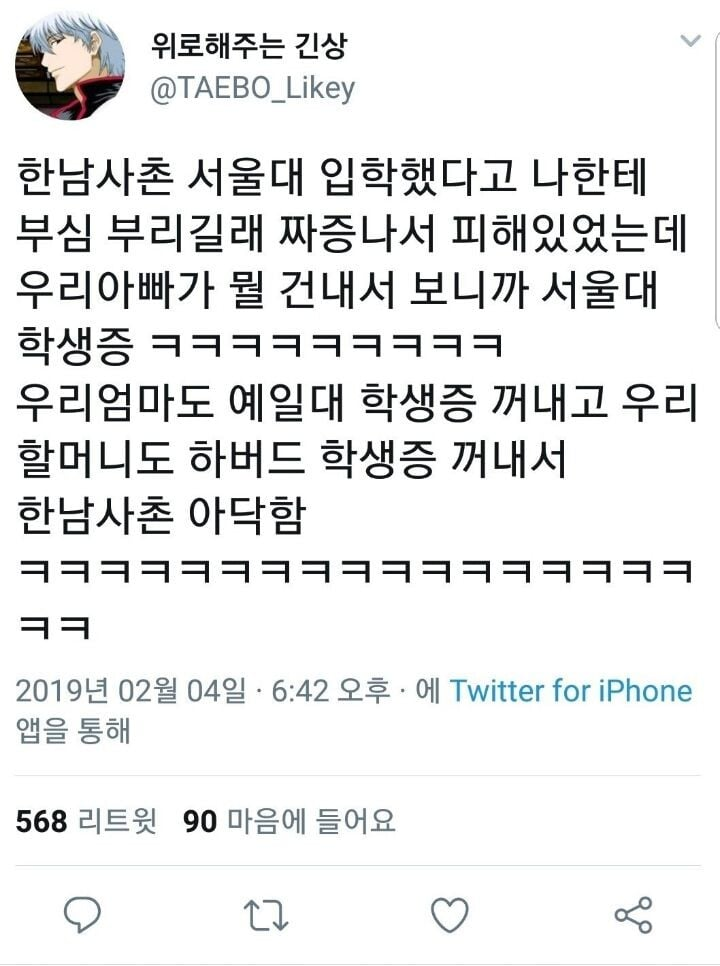
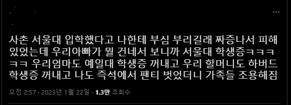
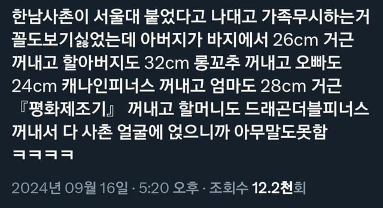

?



?
당연히 구라지만,
가족들이 다 그런 학력이라는걸 공개한거면,
거기서 까이는 건 한남 사촌이 아니라 본인이라는 것도 인지 하지 못하는 능지.
이 집안에서 너를 제외한 모든 사람들이 명문대 다닌다. 라는 뜻인데.
하 참 저는 '동 덕 여 대' 다니거든요?
주작 수준에서 보이는 능지ㅠㅠ
롱꼬추를 왜 사촌 얼굴에 얹나요
사촌간좃빨기
암컷이라서
우하하 빵빠레~
ㅋㅋㅋ 정작 지는 못꺼냄 ㅋㅋ
오랜만에 보는 트주작 짤이네
오랜만에봐도 오글오글하네ㅋㅋㅋㅋㅋ
한남사촌 서울대 까지가 진실임... 그래서 더 슬프네
도쿄제국대 학생증을 꺼냈어야지
온가족이 니가 제일 병신이라고 보여주고 있는데..
할머니에 엄마아빠가 자기 편들어주는 줄 아는 능지…?
근데 할머니 하버드 얘기는 왜한걸까 사촌한테도 할머니잖아 지한테만 할머니라고 생각한건가 ㅋㅋㅋㅋㅋ
능지 문제지 ㅋㅋ
어떤사람이 수십년지난 학생증을 들고댕기냐ㅋㅋ
한남한테 사이다 일침하는 망상에서도 본인은 여전히 인생 나락 찐따고 주변인의 노력에 의탁함
엄마도 28cm 거근..?
타란~